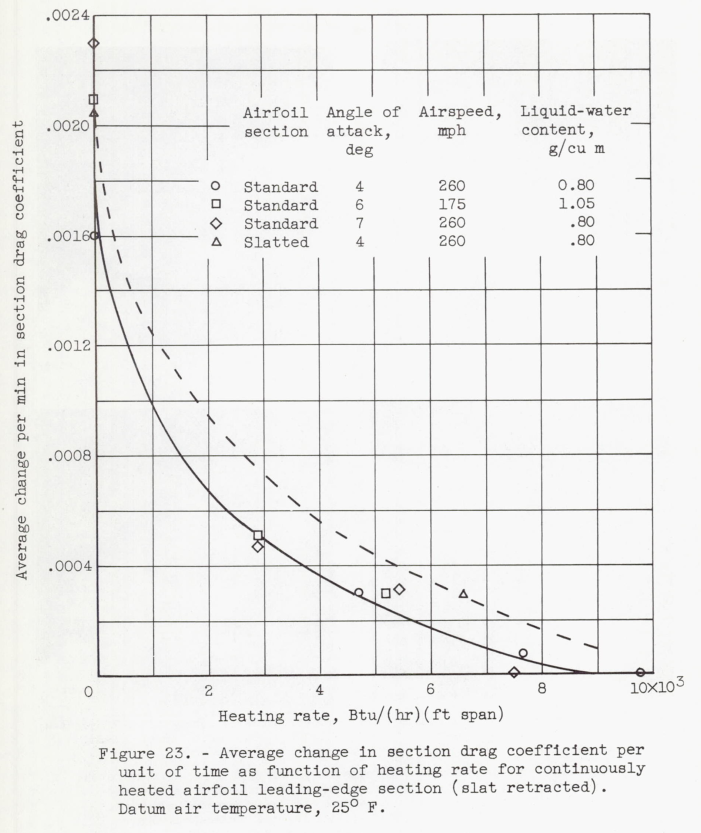

"It is desirable to evaluate the effect of sweepback on the shape of the leading-edge ice formations and the associated drag penalties"
"Effect of Ice Formations on Section Drag of Swept NACA 63A-009 Airfoil with Partial-Span Leading-Edge Slat for Various Modes of Thermal Ice Protection" 1
Summary
The section drag due to ice on a swept airfoil section is measured.
Key Points
- "At low rates of water catch, the rate of drag increase for the unheated swept 63A-009 airfoil is approximately 2 1/2 times as great as that of the unswept airfoil of reference 1 for similar icing conditions"
- "In general, the studies showed that icing on a thin swept airfoil will result in more detrimental aerodynamic characteristics than on a thick unswept airfoil."
- "small amounts of runback icing on the upper surface easily induced flow separation"
Abstract
The effects of primary and runback ice formations on the section drag of a 36 0 swept NACA 63A-009 airfoil section with a partial-span leading-edge slat were studied over a range of angles of attack from 2° to 8° and airspeeds up to 260 miles per hour for icing conditions with liquid-water contents ranging from 0.39 to 1.23 grams per cubic meter and datum air temperatures from 10 to 25 F.
The results with slat retracted showed that glaze-ice formations caused large and rapid increases in section drag coefficient and that the rate of change in section drag coefficient for the swept 63A-009 airfoil was about 2 1/2 times that for an unswept 651-212 airfoil. Removal of the primary ice formations by cyclic de-icing caused the drag to return almost to the bare-airfoil drag value. A comprehensive study of the slat icing and de-icing characteristics was prevented by limitations of the heating system and wake interference caused by the slat tracks and hot-gas supply duct to the slat. In general, the studies showed that icing on a thin swept airfoil will result in more detrimental aero- dynamic characteristics than on a thick unswept airfoil.
Discussion
This is a relatively long (62 page) publication. In the interest of brevity, I will not detail all of its points, particularly about deicing system design. Readers are encouraged to read the full publication, available at ntrs.nasa.gov.
Modern high-speed aircraft frequently have sweptback wings and high-lift devices such as leading-edge slats; it is important, therefore, to investigate such airfoils in icing clouds to determine the differences in icing and aerodynamic characteristics, if any, between these and conventional unswept airfoils. It is desirable to evaluate the effect of sweepback on the shape of the leading-edge ice formations and the associated drag penalties, and compare the icing and drag characteristics of a slatted airfoil section with those of an unslatted section. Drag penalties caused by runback and residual ice formations associated with thermal protection systems utilizing various modes of heating should also be determined for both slatted and unslatted swept airfoils. With a thermal ice-protection system employing intermittent heating (cyclic de-icing), an ice-free spanwise parting strip located near the stagnation region facilitates ice removal from unswept airfoils (refs. 2 to 4). It is desirable, therefore, to compare the drag characteristics of a swept airfoil with and without such a parting strip.
The model consisted of a 36° swept NACA 63A-009 airfoil section incorporating a slatted leading edge over only a portion of span in order to compare simultaneously the icing characteristics of the slatted section with those of the unslatted airfoil. The model was equipped with an icing-protection system utilizing a combination of electric and hot-gas heating systems and was operated both continuously and cyclically over a range of icing conditions. Because of model deficiencies that will be discussed later, only limited data were obtained for the effect on drag of ice formations on the slatted portion of the airfoil when the slat was extended. Primarily, the present report is an extension of reference 1 to include the drag characteristics of a swept airfoil in icing conditions.
APPARATUS AND INSTRUMENTATION The model used in this study (fig. 1) is an NACA 63A-009 airfoil section of 6.9-foot chord in the streamwise direction and spanning the 6-foot height of the icing research tunnel. The leading and trailing edges of the model are sweptback at an angle of 36°. The airfoil leading-edge section consists of two main units, an unslatted or standard-airfoil section of approximately 28 inches spanwise extent and a movable slatted leading-edge section (fig. 2). (Herein, spanwise denotes a direction parallel to the leading edge.) The leading-edge slat is of 20-inch chord in the streamwise direction and 44 inches in spanwise extent. The slat moves forward on tracks and rollers into the air stream in a direction normal to the leading edge. A hydraulic system is utilized to move and hold the slat in any desired forward position. The slat tracks are curved so that the extended slat moves on a circular arc to positions forward of and below the lower surface of the rest of the airfoil section. The radius of curvature of the tracks is approximately 34 inches) and the full movement for the slat is over a 16° center angle.

Heating System
The slat leading edge was provided with an electrically heated ice-free parting strip consisting of a heating element secured to a spanwise fin which in turn was riveted to the airfoil skin at the stagnation region for normal cruise angle of attack. Electric heating elements were also secured around the periphery of the closing ribs at the spanwise ends of the slat. The upper and lower surfaces of the slat were gas-heated. Hot gas was introduced by means of a flexible tube into a D-duct running spanwise near the leading-edge region of the slat (fig. 2). The hot gas was distributed to both ends of the slat, then passed through a double-skin configuration in the upper slat surface) and exhausted into the center of the slat through small orifices. The lower surface of the slat near the D-duct baffle was heated by conduction from the baffle and by the exhaust gas from the upper skin. In addition) a series of six holes in the D-duct supplied supplemental hot gas to the lower surface. A portion of the rear face of the slat (slat surface contacting fixed airfoil when slat is retracted) was provided with a double skin to increase the heat-transfer characteristics. The trailing lip of the lower surface was heated by an extension of this double-skin configuration. The slat tracks were heated by electric heating elements secured along both sides of the tracks.

The fixed airfoil section behind the slat (downstream) was divided into four heating zones because of the location of the two slat tracks and the flexible hot-gas duct to the slat. Each zone was gas-heated by means of a supply duct from a common header) a spanwise D-duct, and a chordwise double-skin configuration. Electric heating elements were used in each zone to obtain an ice-free parting strip near the normal cruise stagnation region of this airfoil section when the slat was extended.
Continuous heating. - The drag increase attributable to runback ice formations was determined for the standard-airfoil section for a continuous-heating system that does not evaporate all the impinging water. The study was made for a liquid-water content of 0.80 gram per cubic meter and angles of attack of 4° and 7°. In addition, one run was made at 6° angle of attack with a liquid-water content of 1.05 grams per cubic meter. Such runback icing may be encountered in flight when an anti-icing system is thermally submarginal for the icing condition. The heat input to the airfoil was progressively reduced, and the drag-increase measurements were coordinated with photographs of the ice formations. The drag data are plotted in figure 15 as a function of time in icing; the accompanying photographs for the runs at 4° and 7° angles of attack are shown in figure 16.


At a 4° angle of attack and with a heating rate of 10,300 Btu per hour per foot span for the standard airfoil and a combined heating rate of 11,380 Btu per hour per foot span for the slat and airfoil section behind the slat, no significant changes in drag were observed during 10 minutes in icing (fig. 15(a)). A small drag increase for the standard-airfoil section (maximum of 15-percent increase in 17 1/2 min of icing) occurred with the heat input reduced to 7670 Btu per hour per foot span (74 percent of initial value). For the slatted section of the airfoil, the drag increased markedly when the combined heat input was reduced to 6660 Btu per hour per foot span (59 percent), the drag increase amounting to 0.0067 (73 percent) in the same 17 1/2 minute icing period. A further 20 minutes with this reduced heat input caused the slatted-section drag to increase an additional 0.0028. During the same 20-minute icing period, the standard-airfoil heating rate was reduced to about 46 percent of the initial value, with a consequent increase in drag from 0.0093 to 0.0148 (59 percent). It is apparent from the data of figure 15(a) and the lower photographs of the ice formations in figure 16(a) that the large increases in drag were caused primarily by the lower-surface ice formations. An increase in the heating rate caused a reduction in drag (fig. 15(a)) by removing much of the ice on the lower surface. The section drag coefficient of the standard airfoil did not change appreciably at a 6° angle of attack until a heat-input value of 5170 Btu per hour per foot span was reached (32 percent of initial heating rate, fig. 15(b)). A further reduction in heat input to 2850 Btu per hour per foot span caused the drag coefficient to increase from about 0.0130 to 0.0177 in an additional 10 minutes.
At an angle of attack of 7° (fig. 15(c)) with a heating rate varied downward from 17,500 to 7550 Btu per hour per foot span, no appreciable drag changes were observed for the standard-airfoil section. For the slatted section, however, the drag increased with time in icing even with a heating rate of 18,840 Btu per hour per foot span (combined heating rate for slat and airfoil section behind slat). This increase in drag was caused by the near stall condition of the airfoil at this angle of attack; hence, small amounts of runback icing on the upper surface easily induced flow separation, with a consequent rapid increase in drag. As the heating rate continued to be reduced, the drag of the slatted section reached a value of 0.039 (combined heating rate of 4290 Btu/(hr) (ft span)) or 172-percent increase over the initial section drag coefficient. As the heating rate of the standard airfoil was also progressively reduced to 5380 and 2920 Btu per hour per foot span, the drag coefficient increased progressively, as shown in figure 15(c), a maximum section drag coefficient of 0.0201 (95-percent increase) being reached at the end of the 54 1/2 minute icing time. Photographs of the ice formations causing these drag values are shown in figure 16(b). A correlation of the data of figure 15 with the photographs of figure 16(b) indicates that the initial drag increases for the standard-airfoil section were caused primarily by ice formations on the lower surface in conjunction with light runback icing on the upper surface. The final large drag increase was caused by heavy ice formations on both surfaces.
I have designed and tested several anti-ice systems, and my opinion is that 18,000 BTU/h-ft. heating is "a lot", to use a technical term.
Also note: "small amounts of runback icing on the upper surface easily induced flow separation"
DISCUSSION
In general, the section drag characteristics of the swept NACA 63A-009 airfoil with slat retracted are more adversely affected by the presence of ice formations in the leading-edge region than are those of the unswept NACA 651-212 airfoil (ref. 1). At low rates of water catch, the rate of drag increase for the unheated swept 63A-009 airfoil is approximately 2 1/2 times as great as that of the unswept airfoil of reference 1 for similar icing conditions. Several factors are believed to contribute to the greater rate of drag change for the 63A-009 airfoil. The chord of the swept 63A-009 airfoil was approximately 14 percent smaller and the thickness was 25 percent less than those of the unswept 65 1 -212 airfoil. The effect of these reductions in size is to yield a higher drag value for a constant ice or protuberance size (see refs. 1 and 6 for the effect of protuberance height on drag values). In addition, the three-dimensional effects introduced by airfoil sweep probably result in an increase in the length of the boundary-layer path over the leading-edge-region, over that occurring with two-dimensional flow; hence, the disruptive effects on the boundary layer by the ice formations in the leading-edge region are probably greater and contribute to the greater drag values.The results reported herein corroborate the data of reference 1, which show that a heavy glaze-ice formation resulting from icing encounters with combinations of high liquid-water content, large droplet size, high airspeed, and high datum air temperatures will cause large and rapid increases in drag that may be detrimental to aircraft operation. Also, the operation of an aircraft with glaze ice on the leading-edge region in a landing-approach condition should be avoided in order to minimize the possibility of airfoil stall due to these ice formations. In order to compare a continuous-heating system with a thermal cyclic de-icing system in an operational analysis, the relation between the rate of change of drag with the heating rate is required. From the continuous-heating data of figures 6 and 15, the average time rate of change in drag coefficient can be determined as a function of heating rate, as shown in figure 23. These data are for moderate to high rates of water catch and include angles of attack of 4°, 6°, and 7°.

Within a reasonable scatter, the data for the standard-airfoil section appear to fall on a single curve over most of the range shown. No apparent drag increase is indicated for a heating rate greater than 9000 Btu per hour per foot span; whereas, with no heating, the data indicate some variation in drag increase per unit time with angle of attack (fig. 6). Although the residual ice formations for heating rates of about 3000 Btu per hour per foot span are relatively large (see fig. 16(b)), the rate of drag increase is only of the order of 30 percent of the drag increase for an unheated airfoil. The limit of heating rate for zero drag increase (around 9000 Btu/(hr)(ft span)) is somewhat doubtful, since the afterbody of the airfoil was heated to prevent frost accumulations; consequently, runback ice formations beyond the gas-heated leading-edge section (20 percent of chord) could not be evaluated. Only a single reliable data point (fig. 23) at a 4° angle of attack was obtainable for the slatted-airfoil section with the slat retracted and with continuous heating. It is believed that data for the slatted-airfoil section lie somewhat higher than those for the standard-airfoil section because of the peculiarities in the air flow over the swept model. It also appears probable that additional data may indicate separate curves for each angle of attack, especially at low heating rates (less than 5000 Btu/(hr)(ft span)).
Conclusions
SUMMARY OF RESULTS The results of a study of the effects of ice formations on the section drag of a 36° swept NACA 63A-009 airfoil with partial-span leading-edge slat may be summarized as follows:
1. Glaze-ice formations in the leading-edge region of the airfoil caused large and rapid increases in section drag coefficient. In general, the icing of thin swept airfoils will result in greater aerodynamic penalties than for thick unswept airfoils. The change in drag coefficient in icing conditions for the swept 63A-009 airfoil with slat retracted was of the order of 2 1/2 times as great as that for an unswept 651-212 airfoil.
2. Removal of the primary ice formations by cyclic de-icing caused the drag to return almost to the bare-airfoil drag coefficient. The increment of drag increase remaining after the heating period was caused by residual runback ice formations and ice remaining on the surface because of limitations of the heating system.
3. The section drag coefficient for the unheated airfoil in icing conditions was substantially unaffected by the use of an ice-free parting strip at the stagnation region.
4. With the slat extended, initial (dry air) drag coefficient values were increased threefold over the drag values with slat retracted because of wake effects caused by the slat tracks and the hot-gas supply line; consequently, an evaluation of absolute drag of the slatted-airfoil section was impossible. The rate of change in drag coefficient in icing conditions with the slat extended was of the same order of magnitude as with the slat retracted.
5. A glaze-ice formation on the leading-edge section for a let-down and approach condition, during which the airfoil angle of attack is increased from low to high angles of attack (7° or 8°), caused a large increase in section drag coefficient, especially when the slat was extended at the high angle of attack
I am a little skeptical about the pressure rake being able to sort out accurately the drag for the limited span slat.
I am also skeptical that the limited span slat, with tracks and hot-gas supply line, represents the performance of a more typical slat span. It seems to me that blockage and end effects would be over-represented. However, only so much model will fit into the icing tunnel, so this was the best data available at the time.
Tunnel wall corrections (if any) were not discussed.
Citations
NACA-RM-E53J30 cites 6 publications:
- Gray, Vernon H., and von Glahn, Uwe H.: Effect of Ice and Frost Formations on Drag of NACA 651_212 Airfoil for Various Modes of Thermal Ice Protection. NACA-TN-2962, 1953.
- Gray, Vernon H., Bowden, Dean T., and von Glahn, Uwe H.: Preliminary Results of Cyclical De-icing of a Gas-Heated Airfoil. NACA-RM-E51J29, 1952
- Gray, Vernon H., and Bowden, Dean T.: Comparison of Several Methods of Cyclic De-Icing of a Gas-Heated Airfoil. NACA-RM-E53C27, 1953.
- Lewis, James P., and Bowden, Dean T.: Preliminary Investigation of Cyclic De-Icing of an Airfoil Using an External Electric Heater. NACA-RM-E51J30, 1952.
- Block, Myron J., and Katzoff, S.: Tables and Charts for the Evaluation of Profile Drag from Wake Surveys at High Subsonic Speeds. NACA-WR-L-107, 1945. (Supersedes NACA-RB-L5F15a.)
- Jacobs, Eastman N.: Airfoil Section Characteristics as Affected by Protuberances. NACA-TR-446, 1932.
NACA-RM-E53J30 is cited 4 times in the NACA Icing Publications Database2
- Bowden, Dean T.: Effect of Pneumatic De-Icers and Ice Formations on Aerodynamic Characteristics of an Airfoil. NACA-TN-3564, 1956.
- Gray, Vernon H., and von Glahn, Uwe H.: Heat Requirements for Ice Protection of a Cyclically Gas-Heated, 36 Swept Airfoil with Partial-Span Leading-Edge Slat. NACA-RM-E56B23, 1956.
- Gray, Vernon H., and von Glahn, Uwe H.: Aerodynamic Effects Caused by Icing of an Unswept NACA 65A004 Airfoil. NACA-TN-4155, 1957.
- Gray, Vernon H.: Prediction of Aerodynamic Penalties Caused by Ice Formations on Various Airfoils. NASA-TM-D-2166, 1964.
An online search 3 found 14 citations of NACA-RM-E53J30.
Notes
-
von Glahn, Uwe H., and Gray, Vernon H.: Effect of Ice Formations on Section Drag of Swept NACA 63A-009 Airfoil with Partial-Span Leading-Edge Slat for Various Modes of Thermal Ice Protection. NACA-RM-E53J30, 1954. ↩
-
https://scholar.google.com/scholar?hl=en&as_sdt=0%2C48&q=Effect+of+Ice+Formations+on+Section+Drag+of+Swept+NACA+63A-009+Airfoil+with+Partial-Span+Leading-Edge+Slat+for+Various+Modes+of+Thermal+Ice+Protection&btnG= ↩